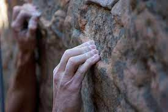
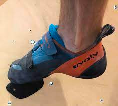
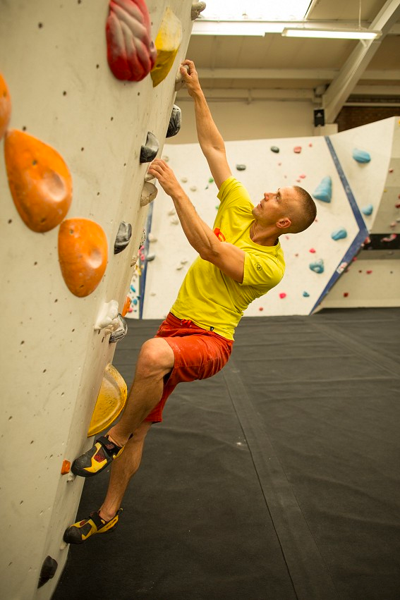
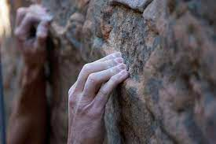
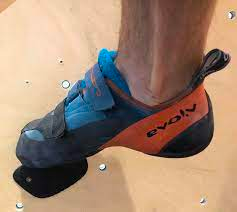
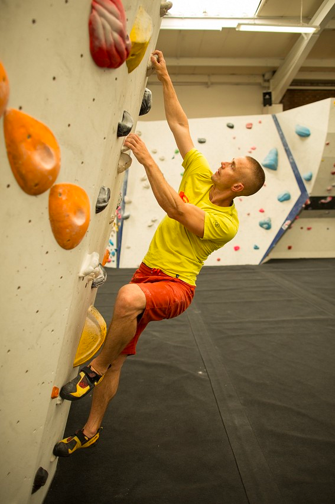

Climbing Techniques
How do you climb? Key techniques include:
- Handholds and footholds
A handhold can also refer to a part of a larger climbing feature that you can place your hands or fingers on.
The footholds are usually small edges you can stand on with the tip of the toe. The more sloped footholds usually standing on the footholds with a larger portion of your climbing shoe.
- Body positioning
Arms Straight
Keep the hips pointed into the wall
Climb with the legs!
- Balance and weight distribution
Climbers maintain balance as they scale up the wall
 




